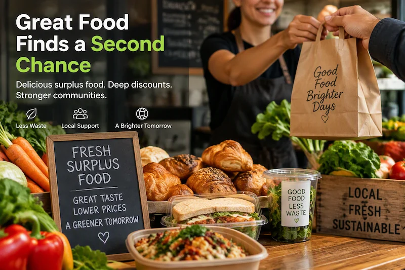

Every day, restaurants, bakeries, cafés, and grocery stores are left with quality food that may never be sold before the end of the day.
Second Chance Food helps merchants turn surplus inventory into discounted listings. Local customers can discover great food, businesses can recover revenue, and communities can reduce waste.
Capture a quick photo of a meal, pastry, produce item, beverage, or prepared dish that is ready for sale.
Our vision AI analyzes the photo and suggests an item name, description, serving size, possible allergens, dietary information, and food-handling recommendations.
Check the AI-generated information, make any needed changes, set a discounted price, and publish the item.
Customers nearby can view the listing and order the food before it becomes waste.
Earn money from quality inventory that might otherwise have been discarded.
Our mission is to make it easy for merchants to reduce food waste by connecting surplus inventory with local customers looking for affordable, quality food.
Save food. Support local businesses. Strengthen communities.